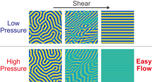
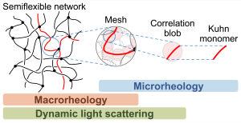
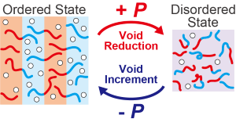
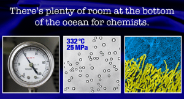
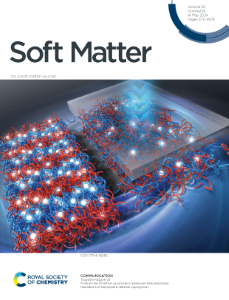
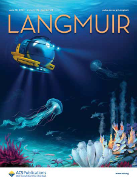

発表論文 / Publications
2025
- Pressure–composition phase diagram of diblock copolymersHiroki Degaki, Ikuo Taniguchi, Shigeru Deguchi, Tsuyoshi Koga*
The Journal of Chemical Physics, 163, 214903 (2025).
DOI: 10.1063/5.0304821

- Dynamic Behavior of Pressure-Responsive Microphase-Separated Diblock CopolymersHiroki Degaki, Ikuo Taniguchi, Shigeru Deguchi, Tsuyoshi Koga*
Journal of Polymer Science, 63, 3752–3761 (2025).
DOI: 10.1002/pol.20250548
- Characterizing semiflexible network structure of wormlike micelles by dynamic techniquesHiroki Degaki, Tsuyoshi Koga, Tetsuharu Narita*
Soft Matter, 21, 3373–3383 (2025).
DOI: 10.1039/D5SM00116A
- Quantitative Insights into Pressure-Responsive Phase Behavior in Diblock CopolymersHiroki Degaki, Ikuo Taniguchi, Shigeru Deguchi, Tsuyoshi Koga*
Macromolecules, 58, 2401–2411 (2025).
DOI: 10.1021/acs.macromol.4c02253 | Highlighted as "Most Read Articles (1 month)"
- Molecular Weight Determination of Kuhn Monomers from a Dynamic Property of PolymersHiroki Degaki, Loren Jørgensen, Tsuyoshi Koga, Tetsuharu Narita*
Macromolecules, 58, 314–320 (2025).
DOI: 10.1021/acs.macromol.4c02598
2024
- Critical role of lattice vacancies in pressure-induced phase transitions of baroplastic diblock copolymersHiroki Degaki, Ikuo Taniguchi, Shigeru Deguchi, Tsuyoshi Koga*
Soft Matter, 20, 3726–3731 (2024).
DOI: 10.1039/D4SM00098F | Selected as front cover
2023
- Deep-Sea-Inspired Chemistry: A Hitchhiker’s Guide to the Bottom of the Ocean for ChemistsShigeru Deguchi*, Hiroki Degaki, Ikuo Taniguchi, Tsuyoshi Koga
Langmuir, 39, 7987–7994 (2023).
DOI: 10.1021/acs.langmuir.3c00516 | Selected as supplementally cover
Cover Pictures

